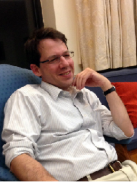
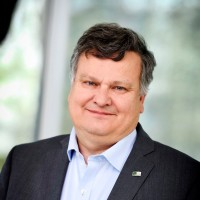

Naijun Zhan is a distinguished professor in the School of Computer Science of Peking University. He got his bachelor degree and master degree both from Nanjing University, and his PhD from ISCAS. Prior to join Peking University, he worked at the Faculty of Mathematics and Informatics, Mannheim University, Germany as a research fellow, and afterwards worked at Institute of Software Chinese Academy of Sciences (ISCAS) as an associate professor, a full professor, and a distinguished professor. His research interests cover formal design of real-time, embedded and hybrid systems, program verification, modal and temporal logics, and so on. He is in the editorial boards of Journal of Automated Reasoning, Formal Aspects of Computing, Journal of Logical and Algebraic Methods in Programming, Journal of Software, Journal of Electronics, and Journal of Computer Research and Development and so on, a member of the steering committees of SETTA and MEMOCODE, the PC co-chairs of FM 2021, SETTA 2016, the general co-chairs of MEMOCODE 2018, MEMOCODE2019 and ICESS 2019, and serves more than 100 international conferences program committees e.g., CAV, RTSS, HSCC, FM, TACAS, EMSOFT and so on. He published more than 140 papers in international leading journals and conferences, 2 books and 4 book chapters, and edited 4 conference proceedings and 7 journal special issues. See lcs.ios.ac.cn/~znj for more details.
I will report our recent work on model-based formal design of embedded systems. In our approach, one can build a graphical model of a system to be developed with the combination of AADL and Simulink/Stateflow, called AADL+S/S, and then conduct extensive simulation. In order to formally verify the graphical model, we translate AADL+S/S models into HCSP automatically. HCSP is a formal modeling language for hybrid systems, which is an extension of CSP by introducing differential equations to model continuous evolution and several kinds of interrupts to model the interaction between continuous evolution and discrete jumps. Using Hybrid Hoare Logic and its theorem prover, the translated HCSP formal model can be verified. In order to justify the correctness of the translation, we give an inverse translation from HCSP to Simulink, so that the consistency can be checked by co-simulation. Also, we extend He and Hoare’s UTP (Unifying Theories of Programming) to hybrid system by introducing higher-order quantification and differential relation, called Higher-order UTP (HUTP), and define formal semantics of AADL+S/S and HCSP with HUTP so that the correctness of the bidirection translation can be proved theoretically. In order to formal verification of HCSP, we extend classical Hoare logic to hybrid systems, and established Hybrid Hoare Logic (HHL), and develop its theorem provers. Particularly, we solved several open problems on invariant generation for hybrid systems, that is the hardest part in the verification of hybrid system by deduction. Finally, we propose the notion of approximate bisimulation for HCSP so that we can discretize a given HCSP process correctly in the sense of approximate bisimulation. Based on which, we define a set of refinement rules through which we can refine an HCSP process into a piece of SystemC or ANSI-C code, which is approximate bisimilar to the original HCSP process. All the above are supported by a tool chain called MARS. We have applied the above approach to design some real-world case studies.
 Ofer Strichman earned his Ph.D in 2001 from the Weizmann Institute, where he worked, under the supervision of Amir Pnueli, on translation validation for compilers, Bounded Model Checking, and other topics in formal verification. He then was a post-doc in Carnegie Mellon University in Ed Clark's group, where he mostly worked on model-checking, learning, predicate abstraction and decision procedures. He published two books: "Decision procedures - an algorithmic point of view" together with Daniel Kroening, and "Efficient decision procedures for validation", edited two others and coauthored more than 100 peer-reviewed articles, mostly in formal verification and SAT. In the SAT field he is mostly known for his contributions to linear-time proof manipulations, exploiting symmetries and incremental satisfiability. In formal verification he is mostly known for his invention of 'regression verification' and various decision procedures, mostly for equalities with uninterpreted functions. He won the 2021 CAV award “for pioneering contributions to the foundations of the theory and practice of satisfiability modulo theories (SMT)”.
Topics of the lectures:
 Thomas A. Henzinger is professor at the Institute of Science and Technology Austria (ISTA), chair of the Austrian Council for Sciences, Technology, and Innovation (FORWIT), and member of the Scientific Council of the European Research Council (ERC). He holds a Dipl.-Ing. degree in Computer Science from Johannes Kepler University in Linz, Austria, an M.S. degree in Computer and Information Sciences from the University of Delaware, a Ph.D. degree in Computer Science from Stanford University (1991), and Dr.h.c. degrees from Fourier University in Grenoble, France, and from Masaryk University in Brno, Czech Republic. He was Assistant Professor of Computer Science at Cornell University, Professor of Electrical Engineering and Computer Sciences at the University of California, Berkeley, Director at the Max-Planck Institute for Computer Science in Saarbrucken, Germany, and Professor of Computer and Communication Sciences at EPFL in Lausanne, Switzerland. From 2009 until 2022, he was the founding president of ISTA in Klosterneuburg, Austria. His research focuses on the theory of software systems, especially models, algorithms, and tools for the design and verification of reliable software systems. His HyTech tool was the first model checker for mixed discrete-continuous systems. He is a member of the US National Academy of Sciences, the American Academy of Arts and Sciences, Academia Europaea, the German Academy of Sciences (Leopoldina), and the Austrian Academy of Sciences. He is a Fellow of the AAAS, the ACM, and the IEEE. He received the Robin Milner Award of the Royal Society, the EATCS Award of the European Association for Theoretical Computer Science, the Wittgenstein Award of the Austrian Science Fund (FWF), and two Advanced Grants of the ERC.
Djordje Zikelic is an Assistant Professor of Computer Science at the School of Computing and Information Systems at Singapore Management University. He joined SMU in January 2024. Prior to joining SMU, He obtained his PhD in computer science in 2023 at the Institute of Science and Technology Austria (ISTA), where he was supervised by Krishnendu Chatterjee and Petr Novotný. For his work on developing a framework for learning and verifying neural controllers in stochastic dynamical systems, he received the 2023 Outstanding Scientific Achievement award at ISTA together with his colleague Mathias Lechner. Before that, he obtained bachelor's and master's degrees in mathematics at the University of Cambridge.
As artificial intelligence (AI) has achieved impressive results in a variety of applications, there is increased desire to utilize AI also in safety-critical applications such as controlling autonomous agents, critical infrastructure, and healthcare devices. However, our ability to certify the correctness of AI systems lags significantly behind the frontier of AI research, presenting a barrier to the deployment of AI technologies in safety-critical systems. This series of lectures will show how formal methods can be used towards ensuring the safety, reliability, and fairness of AI-based systems. First, we will show how reinforcement learning can be used in synergy with formal methods to solve control tasks that have been out of reach for classical control theory, while providing formal guarantees on the learned controllers with respect to temporal specifications. We will present a learner-verifier framework for jointly learning and formally verifying a neural controller together with a neural correctness certificate. This framework is applicable to very general classes of control systems and control objectives, even in the presence of stochastic uncertainty. Second, we will show how small neural networks can be verified statically with bit-level precision, and how such static methods can be complemented, in the case of large networks, with the runtime monitoring of AI-based systems against formal safety and fairness specifications. For example, a monitor can be used to detect violations or novelties that trigger the retraining of a system, or the monitor may signal with high confidence when a decision maker has become unfair. Third, we show how game-based models and strategic logics can be used to reason about multi-agent scenarios, where some of the agents may collaborate to achieve a common objective and other agents may behave stochastically or adversarially. We illustrate several settings that allow the automatic synthesis of optimal policies for individual agents, and other settings where the synthesis of optimal policies is a formally undecidable problem.
 Danny Weyns is a professor at the Katholieke Universiteit Leuven Belgium and Linnaeus University Sweden. He also holds a position as a Chief Scientist at the Norwegian Research Center. His research interests are in the engineering of self-adaptive systems. His primary foci are trustworthiness and decentralization of self-adaptive systems. Prof. Weyns champions the use of solid empirical methods to validate his research results, recently mostly in the domain of the Internet-of-Things.
Danny Weyns is a professor at the Katholieke Universiteit Leuven Belgium and Linnaeus University Sweden. He also holds a position as a Chief Scientist at the Norwegian Research Center. His research interests are in the engineering of self-adaptive systems. His primary foci are trustworthiness and decentralization of self-adaptive systems. Prof. Weyns champions the use of solid empirical methods to validate his research results, recently mostly in the domain of the Internet-of-Things.
Engineering software systems that face uncertainty during operation is challenging. Self-adaptation aims to mitigate this challenge. In this series of lectures, I will motivate the need for self-adaptation, highlight the extensive use of self-adaptation in the industry (not necessarily under the name "self-adaptation"), outline the basic principles of self-adaptation, and elaborate on the key aspects of engineering trustworthy software for self-adaptive systems. The lectures are supported by the book "An Introduction to Self-adaptive Systems: A Contemporary Software Engineering Perspective" published by Wiley-IEEE Computer Society.